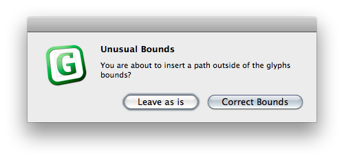

Find the right scale for the drawing in Illustrator. One point unit in Illustrator correspond with units in Glyphs. So something that is 1000 pt high will end up 1000 units height in Glyphs.
One way to get the right scale is to first draw a rectangle with the height of the Cap height in Glyphs, copy paste it to Illustrator and scale the drawings that they have the right size compared to the box.
In Illustrator up to CS4, you can set the origin of the page with dragging the white area in the top left corner between the rulers.

In Illustrator up to CS5 set the origin of the page in the Artboard Options.
Copy paste the outlines.
There might be a dialog:
This should prevent that you copy something far outside the bounds.
It will move the path next to the origin of the glyph.